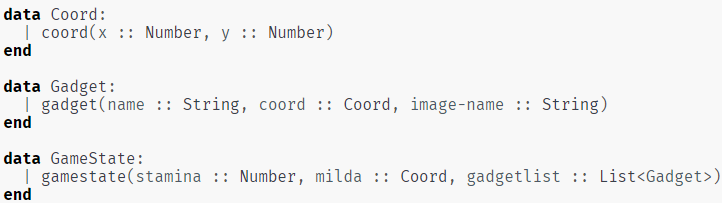

Objective and Overview
The objective of this project is to create a maze game using Pyret. The goal of this game is to exit the maze
by finding the exit before running out of stamina/moves. I will create different datatypes and functions to help
facilitate the game.
General Structure
Pyret is a language that is similar to python but uses its own documentation. You can create different functions
to use repeatedly and also create datatypes. For this project, I created a Coord datatype that had x and y attributes
for coordinates, Gadge datatype that had name, coordinate, and image name as attributes, and GameState datatype that had
stamina, coordinate, and gadgetlist as its attributes. Gadgets are special items that appear on the maze that affects
the game. Some can increase the stamina while some can decrease the stamina.

Maze Component
For the maze, I created a function that would transform a table of o's and x's into a grapic of maze where the o's
represent an open space and the x's represent the walls. Also, I had a function that transform gadgetlist into
the graphics of the gadgets placed appropriately on the map. Gadgetlist contained data such as gadget type and
coordinates which allowed the function to approprilately place them.

Game Mechanism
The gameplay was controlled by a reactor component. This reactor component started the game, told the game when to
stop and every time a key is pressed performed necessary actions to reflect it in the game. The mechanism was
first checking if there is a wall in the input direction. If so, do nothing and wait for next input. If not,
decrease the stamina by 1, move the character, and check if there is a gadget in place. If there is a gadget,
remove the gadget from the gadgetlist of the gamestate variable then change the stamina accordingly. Game either ends
when the stamina reaches 0 or the character reaches the end.
Final Product
It is hard to share the game itself due to the nature of Pyret so I will walk through couple steps of the gameplay.
This is the initial state of the game.
When I press the d key, the charcter moves to the right and the stamina is decreased by 1.
When I press the d key once again, the character moves to the right again, but since there is a gadget, the gadget
is consumed and the stamina is decreased all the way to 15.
By taking optimal pathways and consuming necessary gadgets, I can reach the end of the maze.